夏の始まり、令和初 [梅吉]
連休中にシーツバフバフ遊びを思い出した梅吉さん。
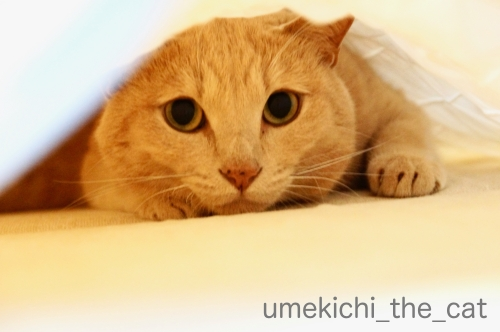
朝、ベッドメイクを始めると飛んできてマットレスとシーツの間に飛び込みます。
シーツをバフバフとはためかせると興奮してシーツの下を這いずり回るのです。

バフバフは激しければ激しいほど楽しいらしい。
この期待感に満ち満ちたお顔！
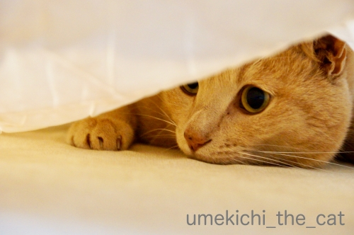
下僕は一生懸命バフバフしますよw
朝から汗かくわーwww
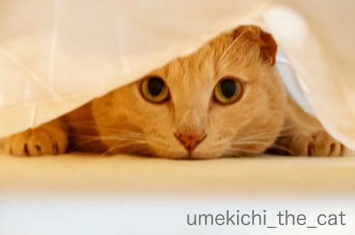
![[猫]](https://blog.ss-blog.jp/_images_e/101.gif) もっとやってや
もっとやってや
と仰せのようですね(⌒-⌒;
結構体力使うんですが腕のエクササイズと思いがんばります！
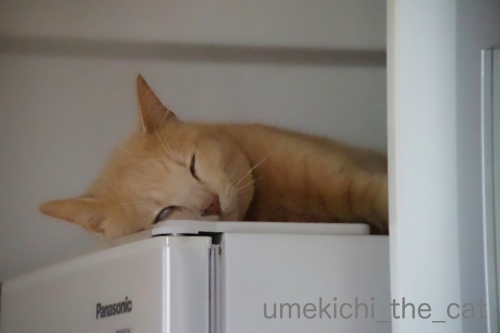
連休後半暑くなると白目が観測されるようになりました。
今シーズン、そして令和初のオフィシャルな白目を昨日5月6日にパチリ。
折も昨日はちょうど立夏の日。夏ですね〜。
梅吉さん、二十四節気を身を以てお示しくださいました＾＾
 ↑ガブッと一押し↑
↑ガブッと一押し↑
連休中の出来事、先ずはベランダ活動から。
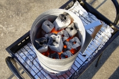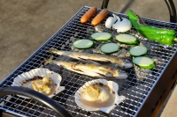
左のバケツみたいなもの。炭起こし用の便利アイテムです。
これがあると超簡単に炭が起こせるのです（おっと談）！
この日は海鮮系。
鮎を焼きました！これまでの人生で一番美味しい鮎でしたー。
去年岐阜のやなで食べたのよりも美味しかったよ＾＾
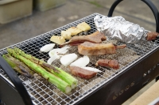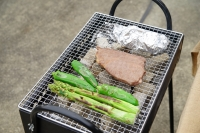
また別の日。
今度はお肉系。ふんぱつして牛肉のステーキ肉とかラムチョップとか。
真夏になると暑すぎてベランダにいられなくなるので
この先梅雨時期になるまでベランダでどんどん焼きますよ(*>艸<)
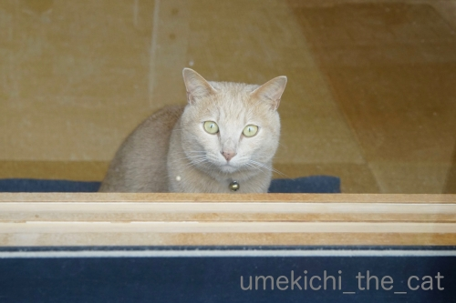
その様子を家の中から見る梅吉www
ちゃんとお留守番のご褒美がありましたよ！
炭火焼の鮎がいちばんのお気に入りでした。
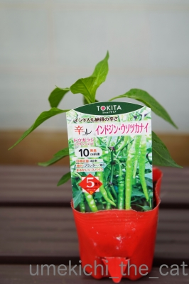
アスパラが終了したので今度は唐辛子栽培です。
インドジン・ウソツカナイを入手しました。
去年ちらりと記事にしたのですがインパクトのある名前の商品を
たくさん出している種苗会社があるのです。
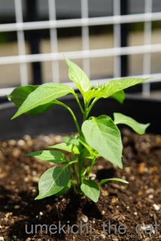
インドジン・ウソツカナイ、生でかじると美味しいとか・・・
た、楽しみ (＠◇＠)
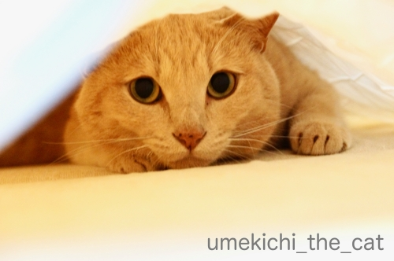
朝、ベッドメイクを始めると飛んできてマットレスとシーツの間に飛び込みます。
シーツをバフバフとはためかせると興奮してシーツの下を這いずり回るのです。
バフバフは激しければ激しいほど楽しいらしい。
この期待感に満ち満ちたお顔！
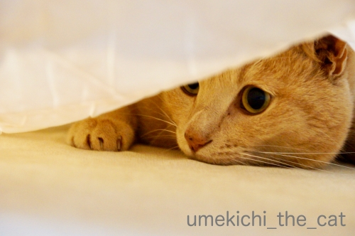
下僕は一生懸命バフバフしますよw
朝から汗かくわーwww
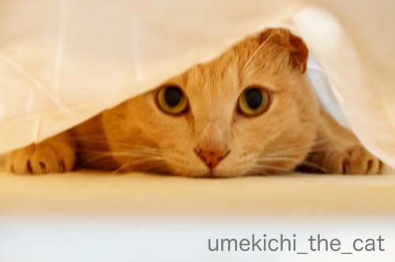
と仰せのようですね(⌒-⌒;
結構体力使うんですが腕のエクササイズと思いがんばります！
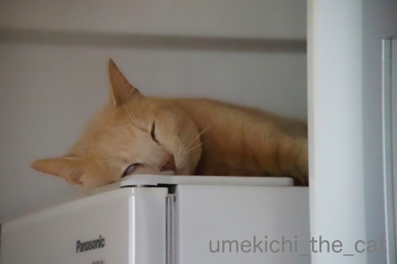
連休後半暑くなると白目が観測されるようになりました。
今シーズン、そして令和初のオフィシャルな白目を昨日5月6日にパチリ。
折も昨日はちょうど立夏の日。夏ですね〜。
梅吉さん、二十四節気を身を以てお示しくださいました＾＾
連休中の出来事、先ずはベランダ活動から。
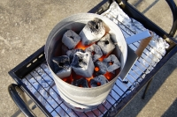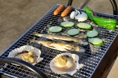
左のバケツみたいなもの。炭起こし用の便利アイテムです。
これがあると超簡単に炭が起こせるのです（おっと談）！
この日は海鮮系。
鮎を焼きました！これまでの人生で一番美味しい鮎でしたー。
去年岐阜のやなで食べたのよりも美味しかったよ＾＾
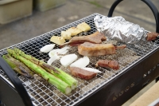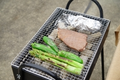
また別の日。
今度はお肉系。ふんぱつして牛肉のステーキ肉とかラムチョップとか。
真夏になると暑すぎてベランダにいられなくなるので
この先梅雨時期になるまでベランダでどんどん焼きますよ(*>艸<)
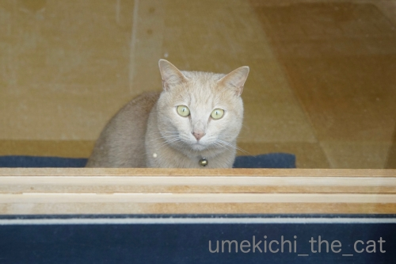
その様子を家の中から見る梅吉www
ちゃんとお留守番のご褒美がありましたよ！
炭火焼の鮎がいちばんのお気に入りでした。
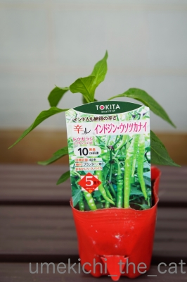
アスパラが終了したので今度は唐辛子栽培です。
インドジン・ウソツカナイを入手しました。
去年ちらりと記事にしたのですがインパクトのある名前の商品を
たくさん出している種苗会社があるのです。
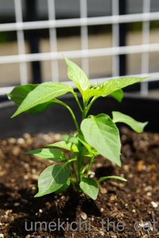
インドジン・ウソツカナイ、生でかじると美味しいとか・・・
た、楽しみ (＠◇＠)

カフェオレ色の梅吉

梅吉 2023年8月10日 永眠


梅吉と出会った譲渡会

犬猫の理由なき殺処分ゼロ
妄想広告
UMEKICHI 光

爆発的に早い！
時々攻撃的！
Thanks to Mr.Boss365
爆発的に早い！
時々攻撃的！
Thanks to Mr.Boss365

梅吉さんが飽きるまでベッドメイクができないのでしょうか。ちぃさん頑張ってますね。そしてついに出たー! 白目!! ドンごろーやっぱり負けました。
by zombiekong (2019-05-07 01:04)
シーツバフバフ～楽しそうだニャ。
by 英ちゃん (2019-05-07 01:34)
ゴールデンウィーク中は
至る所で炭のニオイがしてました＾＾
by ぽちの輔 (2019-05-07 06:21)
梅吉さん、興味津々ですね。
by ニコニコファイト (2019-05-07 06:42)
パフパフ遊び、確かにやってる側は、腕が大変そうー(^_^;)
インド人ウソつかない、のバリエーションには
インド人クソ拭かない、というのがあります。
by よーちゃん (2019-05-07 06:51)
シーツバフバフ、ニャンコって好きですよねぇ=(^.^)=
梅吉さんのワクワク顔、こんな嬉しそうな顔されると
どんなに腕がプルプルしてもやめられませんね(⌒-⌒; )
我が家のシーツバフバフ遊びは遊んでる子を狙う子が出没して
プロレスに発展します( ^ω^ )
そして下僕（私）は一人寂しくバフバフですw
by ニッキー (2019-05-07 07:21)
梅吉さんのひょっこりショッ可愛ね
インドジン・ウソツカナイ これから楽しみですね
日本人も嘘つかな〜い？？
たまに嘘つくな
by チャー (2019-05-07 08:27)
シーツパフパフ♪
おめめキラキラ！期待の目(#^.^#)
これは腕が筋肉痛になろうが
頑張りたくなりますね！
そして満足して白目？？
可愛過ぎます！
by きぃ (2019-05-07 09:13)
ベランダでBBQは良いですね！
色々美味しく頂けますね(^^)
梅吉さん白目でねていますね。
by ma2ma2 (2019-05-07 10:23)
朝から、パフパフ楽しそうな梅吉さん♪
しかも、美味しい炭火焼鮎をゲットしたんですね。
うまうまじゃないですか〜^^。
by nachic (2019-05-07 11:03)
わ～梅吉さん、シーツパフパフ遊びを絶対こてつに教えないね！
毎朝遅刻しちゃう～(^▽^;)
お目目まん丸、ワクワクがはちきれそうです♪
ウチのはリビングのラグに潜り込んで一人で盛り上がりますが、時々、ラグの上からオチリをモミモミしてあげると悶絶しています^^
ちぃさん家の広いベランダは気持ちがいいですね～。
毎日ひとりビアガーデンやっちゃいそうです^^;
by ゆきち (2019-05-07 12:18)
こんにちは。
バフバフ？面白い遊び発見しましたね（笑）
梅吉君が飛び込んで来るなら、何度もやりたいです。
マットレスへの密着度が凄ない！！戦場での「匍匐前進」みたいです。
ルーフバルコニー良いですね。
煙上がると消防署にタレコミされるのでお気を付け下さい。
梅吉君も一緒にバーベキューしたそうです！？(=^･ｪ･^=)
by Boss365 (2019-05-07 12:34)
シーツバフバフ、うちも大好きですよー！
シーツというか、掛布団を直したりしていても
飛んできますね(*￣m￣)ﾌﾟｯ
でも私はあまり相手にしませんが(*￣ー￣*)ﾆﾔﾘｯ
間に入り込むというより、ONしちゃうので重くて(笑)
わー、バルコニーでBBQですか～(ﾟｰ,ﾟ*)ｼﾞｭﾙﾙﾙ
梅ちゃんもガン見しちゃうでしょうね(*´艸｀*)
↑そうそう、すぐタレこむ人いますよね(￣x￣)乂
by カトリーヌ (2019-05-07 17:47)
ベランダでBBQ、いつもやりたいと思いつつ何年もやらずに来てしまいました。今年こそです。
梅吉さん、パフパフ気持ちよさそうですね(^^)
by kou (2019-05-07 19:35)
もうすぐ夏になるんですね。
梅吉さんも夏らしくていいですね。
鮎を焼いたんですね。そんな季節になったんだ。
炭火で焼く鮎は格別ですね＾＾
by riverwalk (2019-05-07 21:01)
梅吉くん、隙間から覗いているのが超かわゆいですぅーーー。
私が行ってる美容院の店長さん(女性)も猫好きで、「絶対、茶トラ！」って言ってるの。そこは私も賛同～。あ、キジトラで手足白の子も好み(実家のミイちゃん柄)。いやいや、結局、みんニャカワイイんだけどねー(^^;)
ベランダBBQ良いですねー。うちのマンションはNGです(:_;)
通常のベランダ以外に、ルーフバルコニーがあるのですが、北側だし、なーーんも使い道がありません。
by ChatBleu (2019-05-07 21:01)
梅吉さんの丸いお目々、
ヤル気元気が溢れていますね（笑）
毎日のシーツパフパフで気分も爽快になりそうです。
広いベランダがあると、
こういう楽しみがあるのですね。
家の中から見守っている梅吉さん、
鮎にロックオンしてそうな（笑）
by kiki (2019-05-07 21:22)
梅吉さん、瞳が大きい！
キョロキョロして楽しそうですね。^^)
BBQは海鮮系が好み。
鮎、美味しそう♪
by yes_hama (2019-05-07 21:56)
初めましてこんばんは！
梅吉さんいい表情ですね。楽しそう(^^)
by 50oyaji (2019-05-07 22:53)
きっときとなお顔ですね！
からの〜白目！（笑）
そろそろ気温も上がってきますね。
有意義な「ベランダ部」の部活！（笑）
あれやってほしいなー、あれ。煙が出ないで簡単に燻製作れちゃうやつ。
川魚をちょっと燻してから焼いたらもー、お酒が止まりませんぜ☆
by Ja-Kou66 (2019-05-08 00:16)
ちぃさんのところのベランダは広いから
ベランダでゴハン出来るから素敵ですよねー。
梅雨前に、どんどん焼いて下さい！(笑)
いつか参加したいｗｗ
そして、満腹になったら「梅吉くん〜〜〜！」って抱きつく！(笑)
そして、流血？(笑)
一生懸命バフバフおつかれさまです。それは良い運動になりそうだよ！！
可愛い顔しちゃって〜。梅吉くんったら〜^^
by リュカ (2019-05-08 07:48)
シーツの中は目がクリクリッってなりますよね～よいわ～可愛いわ~
でもやっぱり梅吉くんは白目ですね！素晴らしいです！白目しかも片目だけ（笑）(*´ω｀*)
by palpal (2019-05-08 20:41)
みなさま、今回はお返事ごめんなさいですm(_ _)m
by ちぃ (2019-05-10 15:37)
梅吉さんの白目！笑わせてもらいました☆
by あとりえＳＡＫＡＮＡ (2019-05-13 19:46)